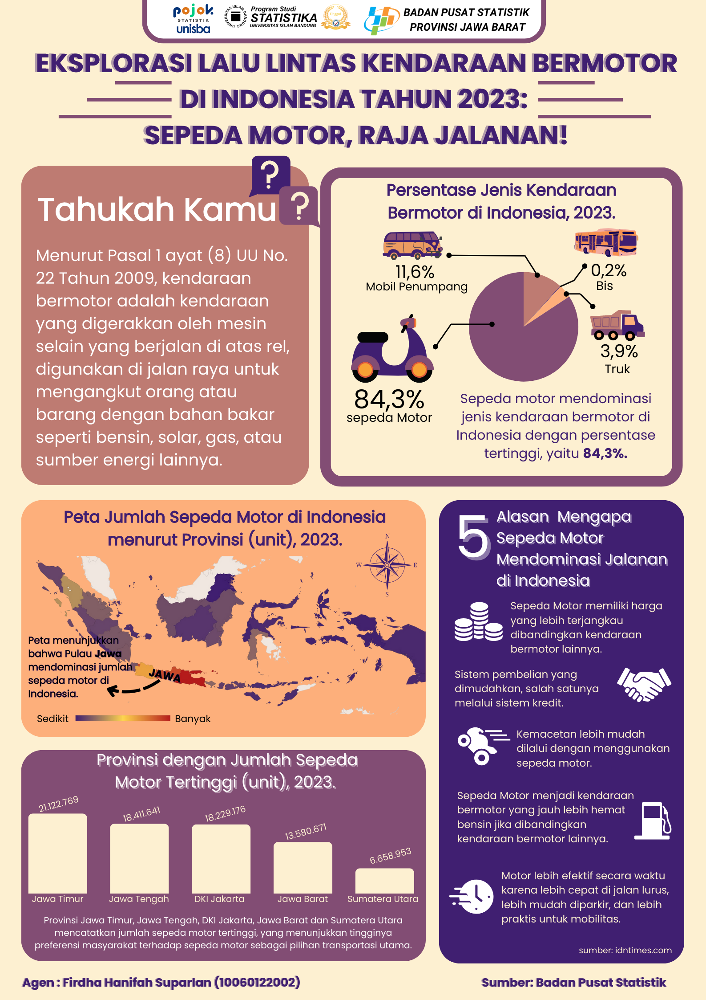
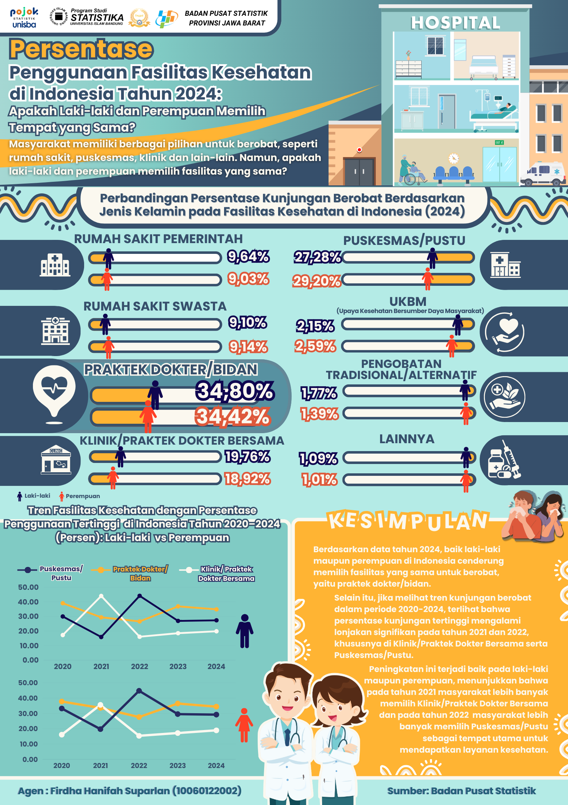
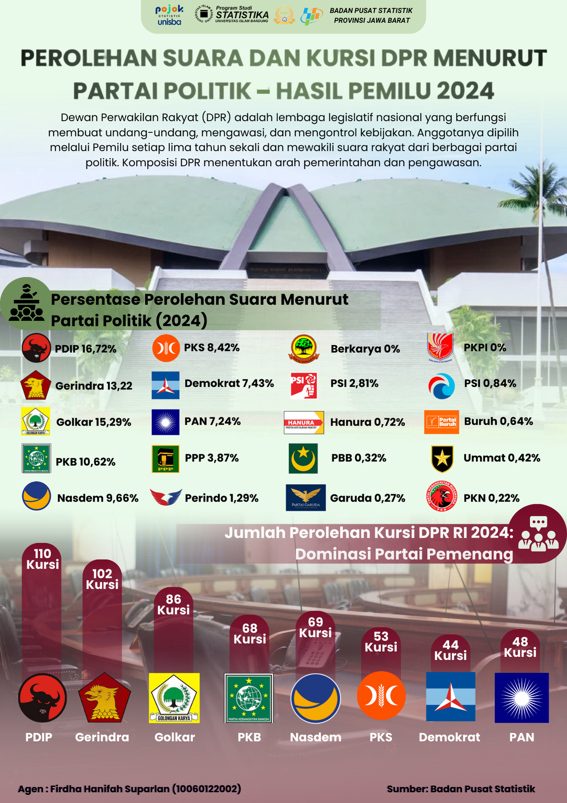
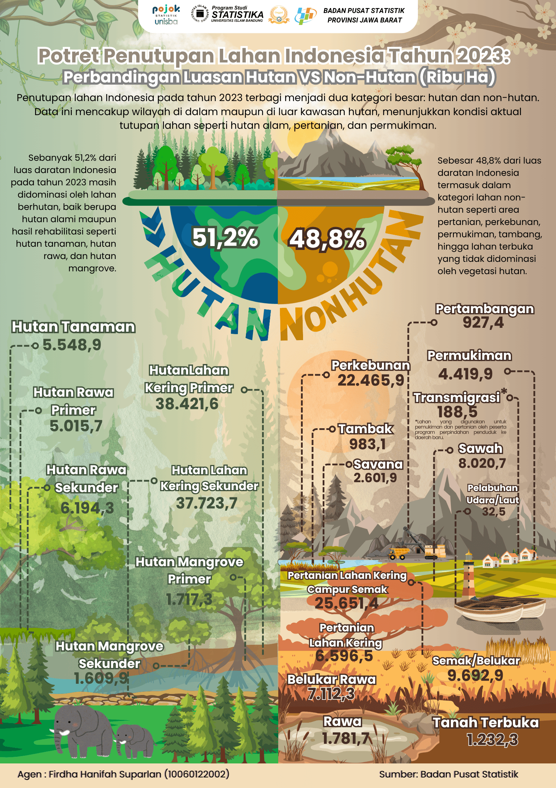
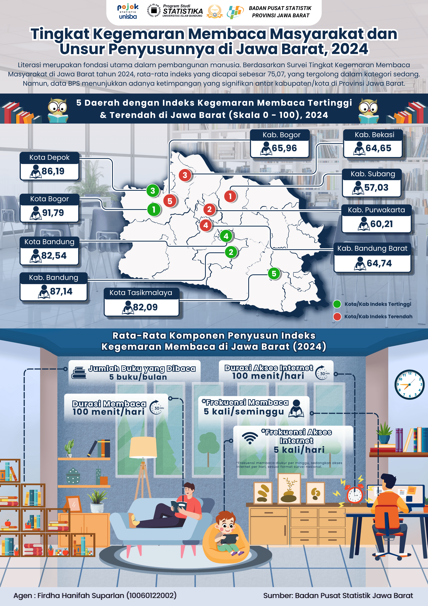
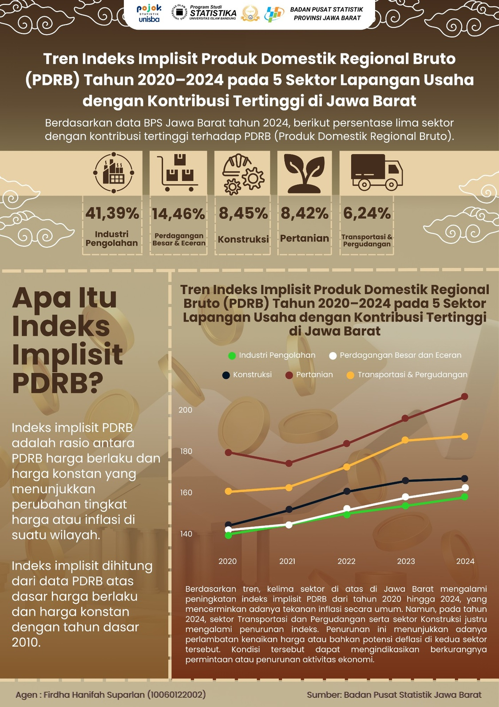

POJOK STATISTIK | SELECTED WORKS
A collection of infographics and videographics created through statistical communication and educational activities at Pojok Statistik Universitas Islam Bandung.
Statistical information presented through visual storytelling and informative graphic design.

Pernahkah kamu penasaran kenapa jalanan di Indonesia dipenuhi oleh sepeda motor? Ternyata, 84,3% kendaraan bermotor di Indonesia adalah sepeda motor, dengan jumlah terbanyak di Pulau Jawa! Apa yang membuat motor begitu dominan? Yuk, baca infografis ini untuk tahu lebih lanjut!

Apakah laki-laki dan perempuan memilih tempat berobat yang sama? Data ini mengungkap fakta tentang pilihan fasilitas kesehatan di Indonesia tahun 2024! Dari praktik dokter/bidan hingga pengobatan tradisional, ada tren menarik yang menunjukkan pergeseran preferensi dalam lima tahun terakhir. Kira-kira, fasilitas mana yang paling banyak dipilih? Dan siapa yang lebih sering ke puskesmas? laki-laki atau perempuan? Temukan jawabannya di sini!

Pemilihan Umum (Pemilu) Tahun 2024 telah menghasilkan komposisi baru di Dewan Perwakilan Rakyat (DPR) Republik Indonesia. Infografis ini menyajikan gambaran mengenai perolehan suara nasional yang diperoleh masing-masing partai politik peserta Pemilu, serta jumlah kursi yang berhasil diraih di DPR. Data yang ditampilkan bersumber dari Badan Pusat Statistik (BPS) dan mencerminkan hasil akhir rekapitulasi secara nasional. Visualisasi ini bertujuan memberikan pemahaman yang lebih mudah dan komprehensif mengenai kekuatan politik yang ada di parlemen, serta memperlihatkan sejauh mana suara rakyat dikonversi menjadi representasi di lembaga legislatif. Dengan demikian, publik dapat mengetahui konfigurasi kekuatan politik nasional yang akan berperan dalam proses legislasi, pengawasan, dan pengambilan kebijakan selama periode pemerintahan 2024–2029.

Penutupan lahan Indonesia pada tahun 2023 terbagi menjadi dua kategori besar: hutan dan non-hutan. Data ini mencakup wilayah di dalam maupun di luar kawasan hutan, menunjukkan kondisi aktual tutupan lahan seperti hutan alam, pertanian, dan permukiman.

Infografis ini menampilkan data hasil Survei Kegemaran Membaca Masyarakat di Jawa Barat tahun 2024, termasuk indeks tertinggi dan terendah di tiap kabupaten/kota serta indikator penyusunnya.

nfografis ini menampilkan tren Indeks Implisit PDRB tahun 2020–2024 pada lima sektor dengan kontribusi tertinggi di Jawa Barat. Secara umum, kelima sektor mengalami kenaikan indeks yang mencerminkan adanya tekanan inflasi. Namun, pada tahun 2024, sektor Konstruksi dan Transportasi menunjukkan penurunan indeks yang dapat mengindikasikan melemahnya aktivitas ekonomi di sektor tersebut.
Educational videos and statistical content developed to communicate data and statistical knowledge.
Jawa Barat, sebagai salah satu provinsi dengan mobilitas tinggi, terus mengalami dinamika dalam sektor transportasi darat. Dari pertumbuhan jumlah kendaraan, perkembangan infrastruktur, hingga tantangan kemacetan yang semakin kompleks, semua menjadi bagian dari realitas transportasi di wilayah ini. Videografis ini menyajikan gambaran mendalam tentang kondisi transportasi darat di Jawa Barat, mengungkap bagaimana perubahan terjadi dan apa dampaknya bagi mobilitas masyarakat.
Jawa Barat terus berupaya meningkatkan sektor kesehatan melalui pengembangan fasilitas, peningkatan jumlah tenaga medis, dan perluasan cakupan jaminan kesehatan bagi masyarakat. Dari rumah sakit hingga puskesmas, dari dokter hingga tenaga kesehatan lainnya, setiap elemen berperan dalam membentuk sistem kesehatan yang lebih baik. Videografis ini menyajikan gambaran mendalam tentang kondisi kesehatan di Jawa Barat, mengungkap bagaimana perkembangan fasilitas, distribusi tenaga medis, serta dampak kebijakan jaminan kesehatan terhadap masyarakat.
JPemilu bukan sekadar peristiwa lima tahunan, tetapi merupakan cerminan suara rakyat yang menentukan arah bangsa. Dari periode tahun 2019 dan 2024, bagaimana tren keterwakilan gender di parlemen? Siapa yang paling banyak duduk di kursi DPD? Apakah perempuan makin terwakili? Infografis ini mengajak kamu menelusuri data Pemilu Indonesia dalam dua dekade terakhir, lengkap dengan tren, angka, dan pesan di baliknya. Yuk, pahami peran angka dalam demokrasi!
JBencana alam bukan hanya deretan peristiwa, tapi juga potret nyata dari kerentanan dan ketangguhan kita sebagai bangsa. Di tahun 2024, bagaimana tren bencana alam yang terjadi di Indonesia? Berapa jumlah kejadian letusan gunung api, banjir, longsor, dan gempa bumi? Wilayah mana yang paling terdampak? Videografis ini mengajak kamu menyusuri data dan cerita di balik angka bencana alam di Indonesia—menyadari pola, memahami dampak, dan menggugah aksi nyata untuk mitigasi dan kesiapsiagaan.
Pendidikan bukan sekadar proses belajar mengajar, tetapi merupakan pondasi masa depan generasi bangsa. Dalam beberapa tahun terakhir, bagaimana kondisi pendidikan di Jawa Barat? Apakah akses pendidikan makin merata? Bagaimana rasio guru dan murid di berbagai jenjang? Infografis ini mengajak kamu menelusuri data pendidikan di Provinsi Jawa Barat, lengkap dengan tren, angka, dan cerita di balik statistiknya. Yuk, pahami peran data dalam pembangunan pendidikan!
Pertumbuhan ekonomi Jawa Barat terus menunjukkan tren positif dalam beberapa tahun terakhir. Namun, apakah dampaknya sudah dirasakan secara merata oleh seluruh lapisan masyarakat? Infografis ini akan membawamu menelusuri dinamika ekonomi Jawa Barat tahun 2024—dari sektor unggulan, kontribusi daerah, hingga ketimpangan antarwilayah. Temukan data, tren, dan cerita di balik angka-angkanya!